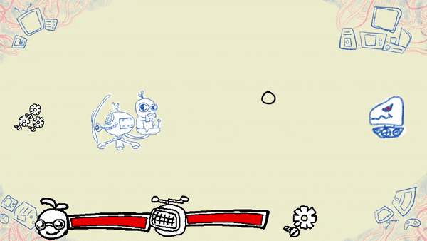
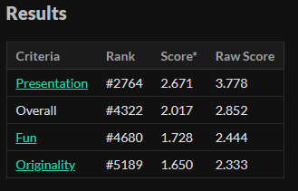

Botrush
The robot and the doctor fighting for survival.
Made in 48 hours for GMTK Game Jam 2021 "Joined Together"
> Play here!Botrush is arcade style survive-as-long-as-you-can type of game. The main mechanic and interpretation of the theme was that the doctor and the robot were "joined together" but also separately served different purposes like attacking or picking up scrap. I was part of a team of three and I did most of the programming and some UI art.
#4322 out of 5,000+ entries, oof.
The game didn't get that too hot of a reception due to the game being barely complete (if at all complete.) The team also had to manage priorities with schoolworks and that helped slow down development, but I still think we made good progress and a good effort.
Status: Released
> Play here! < Back to works